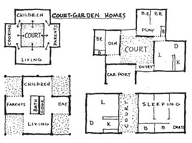
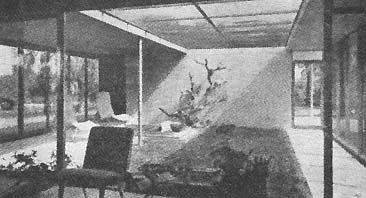
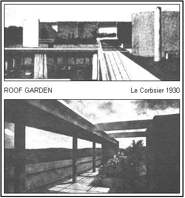

We often think that when we have completed our study of one we know all about two, because "two" is "one and one." We forget that we have still to make a study of "and."
- Eddington: The Nature of the Physical World
As one advances from house planning to actual building, he soon discovers that the design of a house cannot be divorced from its structural purpose. The 18th century sculptor, Horatio Greenough, recommended that man-made designs, like those found in nature, should follow the function of the structure. This "form follows function" concept implies that the actual beauty of a building is relative to the degree to which it meets the demands of its function. A home with a high degree of living efficiency is almost always esthetically pleasing.
One should not, however, confuse simple, efficient house beauty with the sort of rational purism that currently passes off as modern architecture. In some quarters we find a revolt against rational materialism in favor of more poetry and imagination in designing dwellings. Architectural schools too often foster among students an academism of ascetic impoverishment which reduces the rising young architect (in Eric Gill's terms) to a "subhuman condition of intellectual irresponsibility."
The rejection of the box house with its meaningless decoration ("applied art") was first successfully achieved by the Spanish architect, Antonio Gaudi. In 1915 Gaudi independently developed a flowing sculptural, plastic quality in building that remains unique to this day. He showed that superfluous design elements can be used if quality and measure control their integration. There is apparently a need in man for things that are not strictly necessary. In prehistoric times man painted the cavern ceilings before he knew how to build roofs.
But prior to cave dwelling, man lived in the open spaces under the sun. The cave was a protective shelter rather than a place where life was carried on. Man's craving for living in the outdoors continues to be strong. Open space is superfluous to man's shelter needs, yet inner garden-courts were built in ancient Egypt and China long before houses were fully developed as protective and sheltering privacy areas. The Greek peristyle house led to the Roman atrium and the Spanish patio.
The first court-garden house was built in the 1930's in Germany by architect Mies van der Rohe. Very little was done with this architectural form until after World War II, despite its many advantages. A court-garden house offers maximum privacy and separation of living func tions. Solar exposure and cross-ventilation are improved, and the fewer wall openings and shorter spans offer major structural savings. Being inward-directed, the court-garden house has few or no openings on its exterior sides.
The court-garden house is merely one system of planning developed to produce a livable and economical environment. Another system, the free-form, will be discussed in the following chapter. Both systems represent thinking founded upon basic design concepts universally applicable.
Such a concept is the optimum circulation path, a universal constant in design and structure economy. A circulation path may be a closed-in hall or an imaginary "traffic lane." The Small Homes Council found that when the circulation path area of a house exceeds 15% of the total floor area, the total layout suffers. Besides being direct and as short as possible, a main circulation path should be centrally located and should radiate to the various parts of the house. Ideally, one should be able to go to any part of the house from the main entry, without passing through any other part.
A second universal constant in design and structure economy is the space-time relation. Many of us continue to live in the Newtonian world of three-dimensional static space. A building is of this static nature; we have to walk around it at ground level and view front, side and rear elevations before we can comprehend its design and structure. But a building that offers continuously changing relationships depicts a certain space-time quality, a dynamic relativity, motion in space. Compare Le Corbusier's roof-garden designs with the usual steep-pitched shingle roof. The flat roof-garden offers the viewer a new dimension, a new space relation-a view from above as well as from below. The court-garden offers a similar illusion of motion in space. There is a certain floating continuity in window transparency and penetration of indoor-outdoor spaces.
The purpose of achieving this space-time quality in our building design is simply to intensify our emotional reactions. An owner-builder should seek to develop new relations in his design which will make him more emotionally active and receptive. Much study has been given to this subject by psychologists. At a recent American Institute of Architect", convention, psychiatrist Humphrey Osmond said that the most carefully designed buildings today are zoos. An animal will die if not properly provided for. A human, however, learns to adjust. The emotional cost of this adjustment can hardly be assessed, but it must be considerable. Even under a perfect but unchanging condition a dulling effect is experienced that would, in a comparable situation, kill the most hearty beast. Freud has told us that irritants generate life. We really need the changing contrasts and tensions of opposing space situations.
Ecto-space, meso-space, endo-space relationships offer contrasts in terms of indoor-outdoor environment. Dr. Osmond also distinguishes between sociopetal space and sociofugal space-a situation that brings people together and one that keeps them apart. Contrasts are also made between static space and fluid space. Motion in space is fluid whereas the eventual termination process is experienced as a static space.
So much for the analysis of space; the average owner-builder is no doubt more concerned with the tools and methods for evoking these expansive emotions of discovery in his design and structure. It is important to know how to design so as to lead the observer through a sequence of experiences revealing the dwelling as an organic entity; a pattern of rhythms, effects and ordinal sequences, leading finally to climactic repose.
The creative problem essentially resolves itself into the development of (1) scale and (2) rhythm in building.
Scale is dimension relative to man's visual apprehension, or to his physical size. When we preceive our environment we naturally use the human body-size as a yardstick. The scale of the median human figure-height has been conveniently expressed in the 3-foot module. A module is a "little measure", a division-unit. Perhaps the one most important tool of design and structure economy is modular coordination. Modular layout refers to the sizing of a building in relation to a basic division-unit. The 4-inch module is most commonly used; 16-inch, 24-inch and 4-foot modules are also used as gridwork design guides. All outside-wall lines and interior partitions are designed to fall on the grid-module.
The correct ordering and proportioning of modules is essential to good design. For the creation of an intimate environment, for instance, on, would employ a smaller module than in the rest of the house (reduced sizes give an impression of coziness and a general sense of ease). Each part must be somehow related to each other and at the same time to the total composition. Proportion is a composite of function and materials, scale and composition. Scale in design is achieved through focus and contrast as well. Color can be used effectively for focus; contrasts of light and shadow and spatial sequences can also give desired results. In contemporary design we use texture as an equivalent to ornamental detailing.
Design for rhythm in building is practically an unknown concept, even though the capacity to respond to rhythm is innate and basic to normal life. We can create rhythm in our designs through the juxtaposition of colors and of textures, through the patterning of volume, through the succession of areas of varying light levels, through the spacing of freestanding columns. With these design-aids we can create a slow and even rhythm (beat) to suggest dignity and poised assurance in our composition. Or we can introduce off-beats of such secondary elements as openings and textured panels to create a gayer quality in our design.
Good architecture has been likened to "frozen music," and Geoffrey Scott calls space "liberty of movement." In our dwelling design we seek order, relationship and integral structure. Order in musical notes creates melody; the relationship of notes played produces harmony; the structure of musical elements played in a planned sequence produces a symphony.
BIBLIOGRAPHY (books listed in order of importance)
The Court-Garden House: Schoenauer, 1962.
Antonio Gaudi: Sweeney, 1960
The Architecture of Humanism: Scott, 1914.
Vision in Motion: Moholy-Nagy.
Architecture As Space: Bruno Zevi.
|
 COURT-GARDEN Twitchel 1948 |
 |
 |